Rénovation complète d'un appartement ancien dans le 11e arrondissement de Paris. Un chantier structurel qui a permis de retrouver et sublimer la charpente et les colombages d'origine, aujourd'hui signature du séjour.
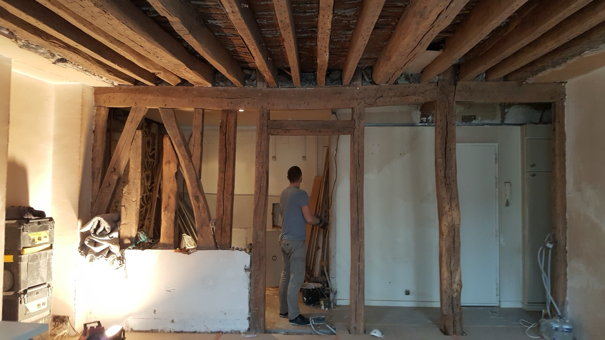
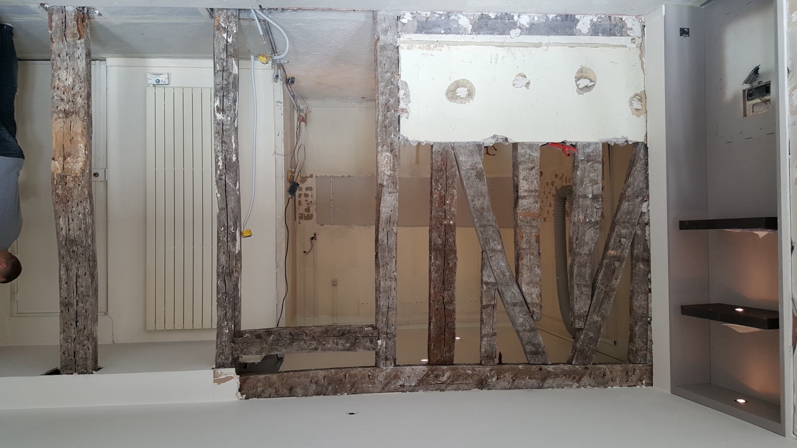
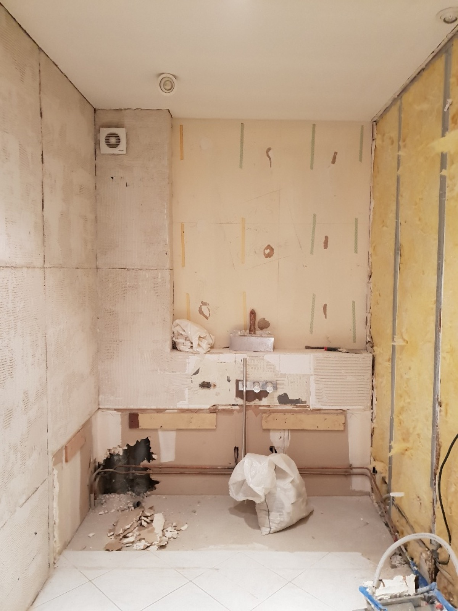
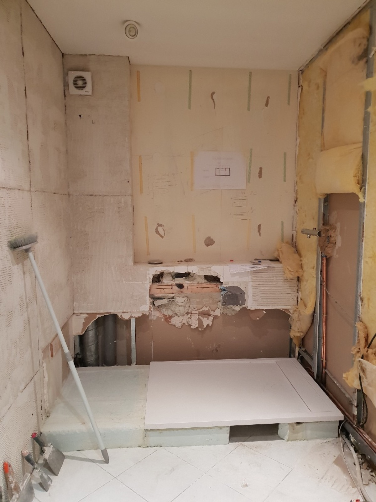
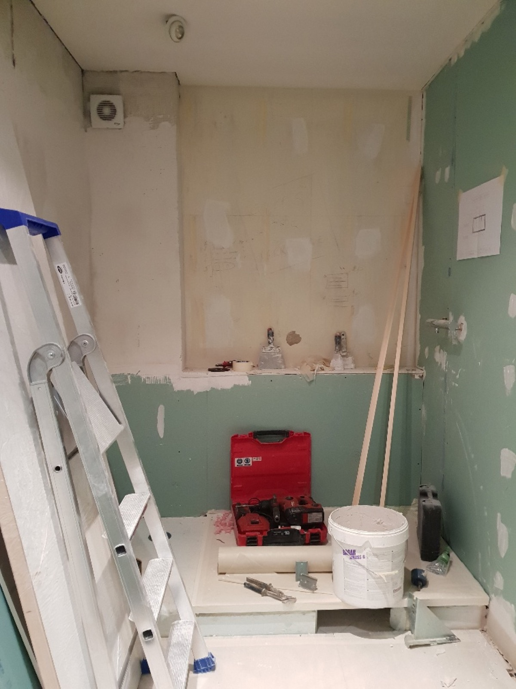
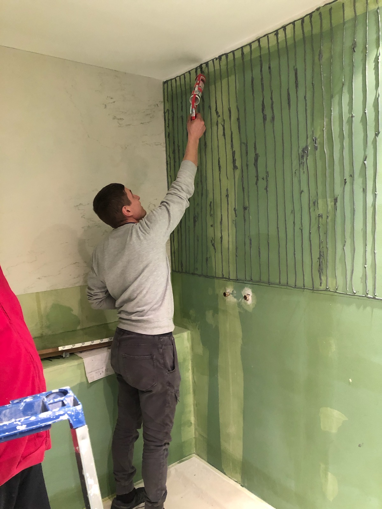
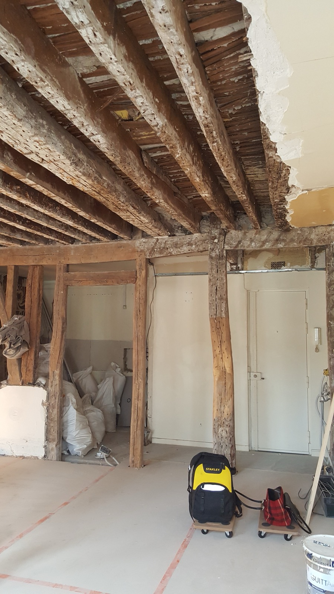
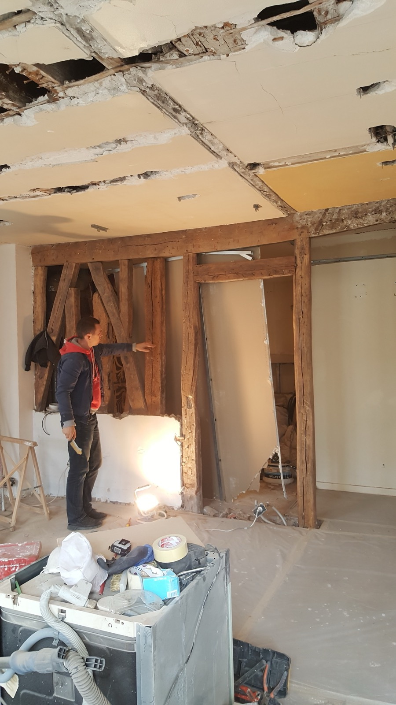
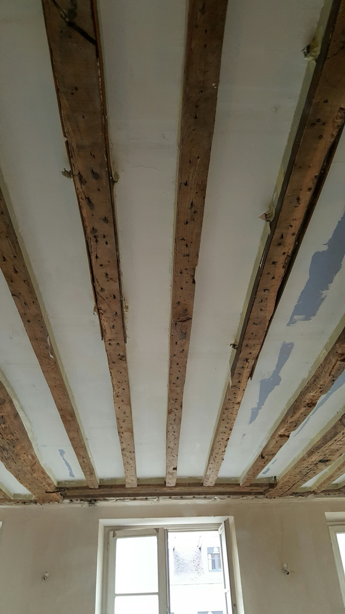
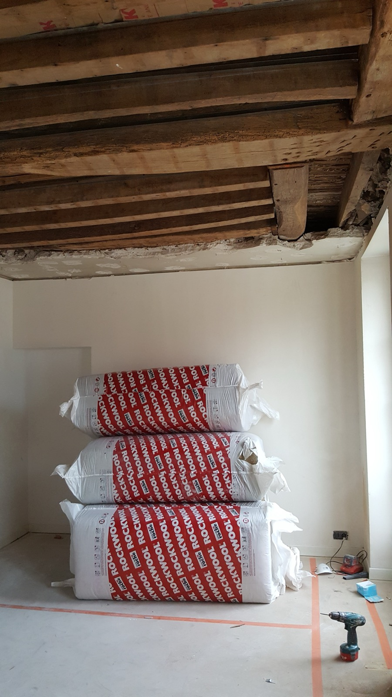

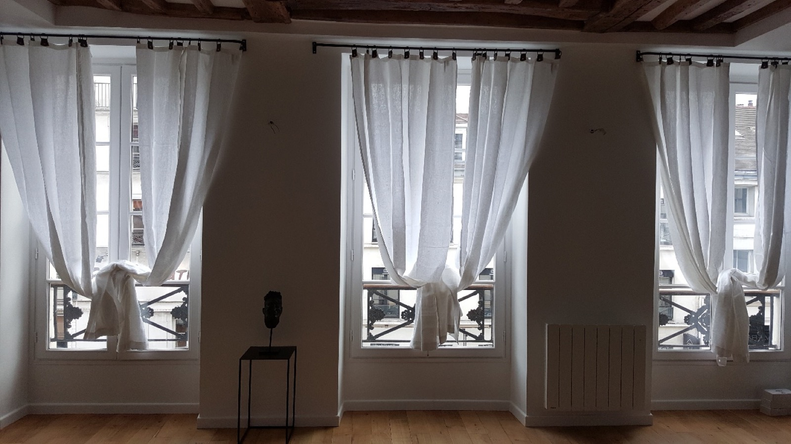
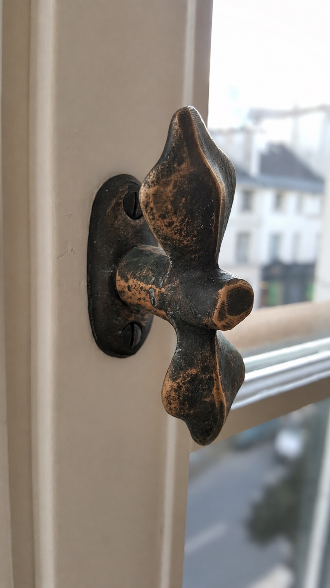
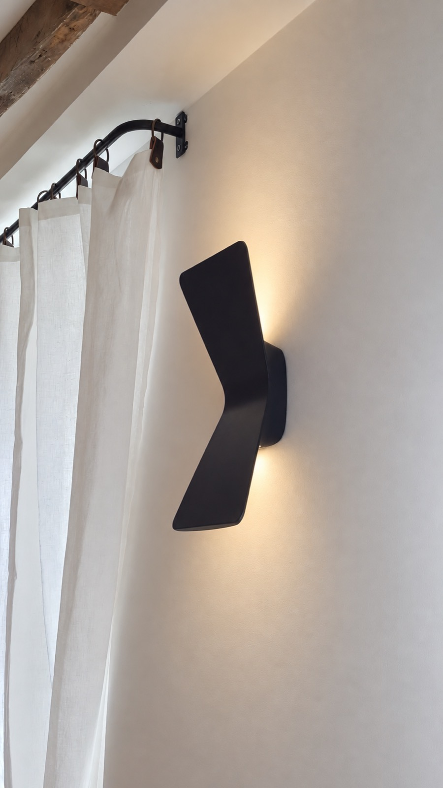
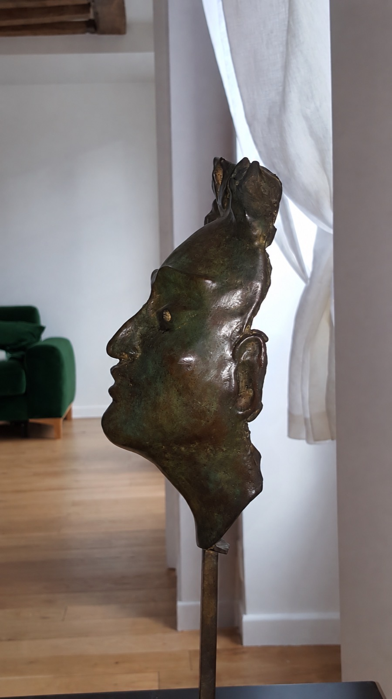
Un projet ? Parlons-en.
Contactez-nous